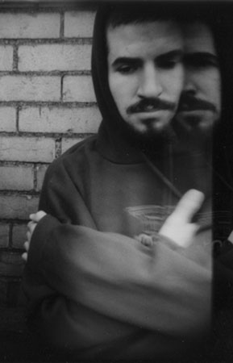

|
|
- Biography -

BRAD DELSON
Date Of Birth : 12/01/77
INSTRUMENT: Guitar
GEAR:
- PRS Guitars
- Ibanez Guitars
- Mesa Boogie Dual Rectifier heads
- Mesa Boogie cabinets
- D'Addario strings (10XL)
- TC Elecronic effects
- Boss Pedal effects
- D'Addario cables
- Dunlop picks (.73)
Brad Delson, or "BIG BAD BRAD" as he refers to by, was baron in Agoura,CA, where he went to Aguora High School with
Mike Shinoda. He attended UCLA, where he and Phoenix were roomates, and later graduated with a Bachelor's Degree in
Communications. Brad can play an amazing range of things on his guitar. He can do everything from belting out
a face-melting riff, to bringing it down a few notches and making some classic melodic tunes.
QUOTE:
"I love playing music with my friends. I'm really proud of the record we've made and the opportunity we have to play
these songs all around the world. Much respect to all the people who have supported us and help us to make
dis ting happen -- Booyakasha!" -Brad
|